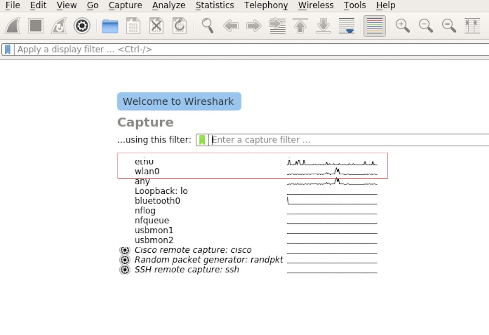
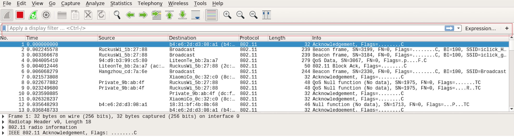
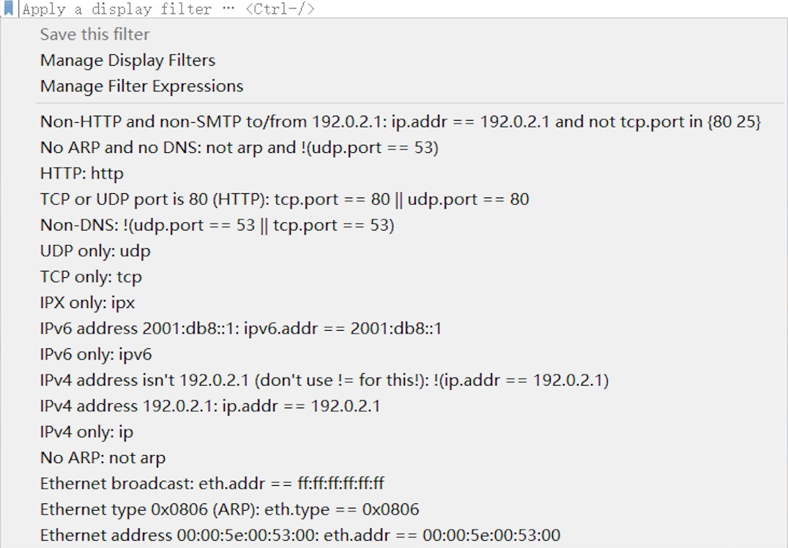
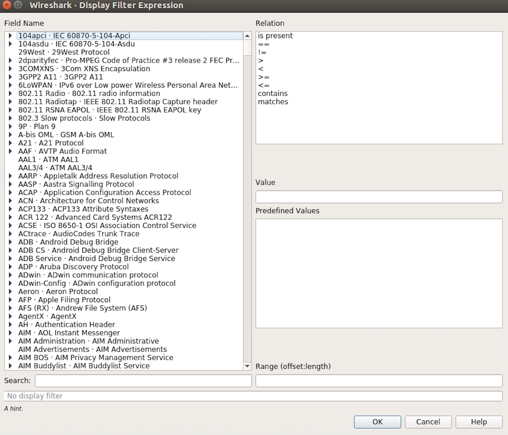
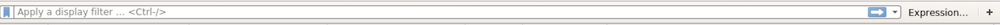
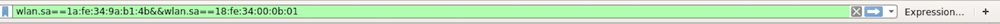
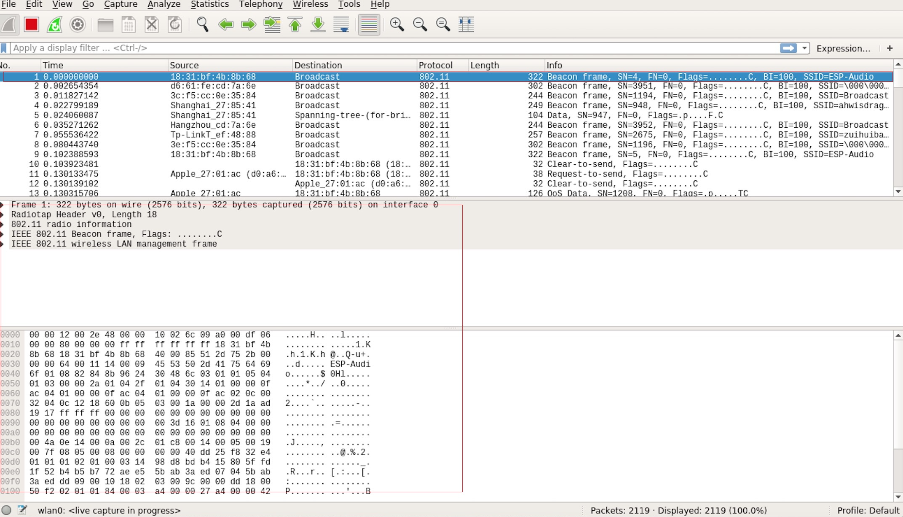
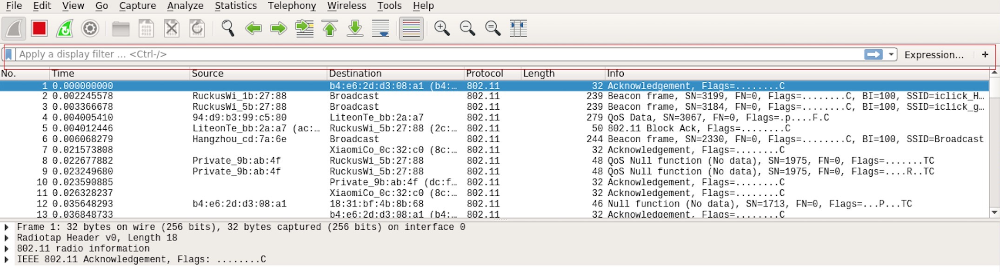
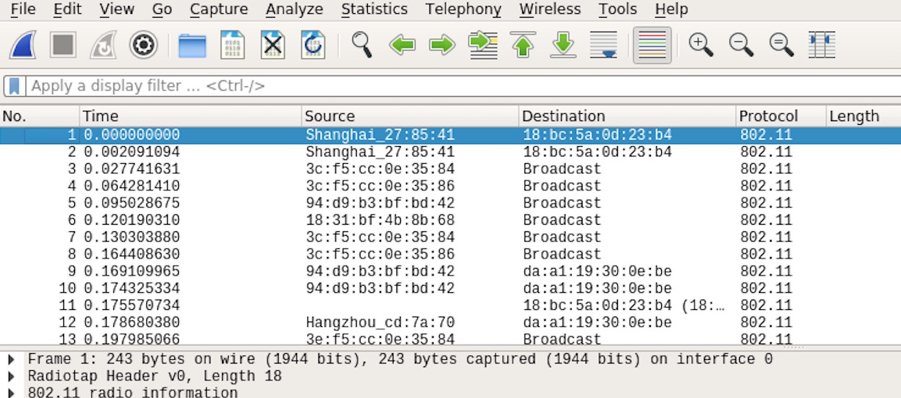
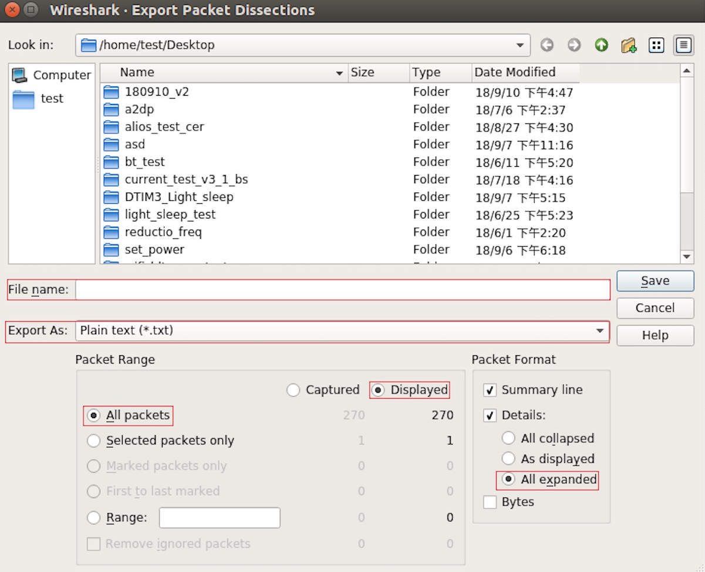

Espressif Wireshark User Guide
1. Overview
1.1 What Is Wireshark?
Wireshark (originally named "Ethereal") is a network packet analyzer that captures network packets and displays the packet data as detailed as possible. It uses WinPcap as its interface to directly capture network traffic going through a network interface controller (NIC).
You could think of a network packet analyzer as a measuring device used to examine what is going on inside a network cable, just like a voltmeter is used by an electrician to examine what is going on inside an electric cable.
In the past, such tools were either very expensive, proprietary, or both. However, with the advent of Wireshark, all that has changed.
Wireshark is released under the terms of the GNU General Public License, which means you can use the software and the source code free of charge. It also allows you to modify and customize the source code.
Wireshark is, perhaps, one of the best open source packet analyzers available today.
1.2 Some Intended Purposes
Here are some examples of how Wireshark is typically used:
Network administrators use it to troubleshoot network problems.
Network security engineers use it to examine security problems.
Developers use it to debug protocol implementations.
People use it to learn more about network protocol internals.
Beside these examples, Wireshark can be used for many other purposes.
1.3 Features
The main features of Wireshark are as follows:
Available for UNIX and Windows
Captures live packet data from a network interface
Displays packets along with detailed protocol information
Opens/saves the captured packet data
Imports/exports packets into a number of file formats, supported by other capture programs
Advanced packet filtering
Searches for packets based on multiple criteria
Colorizes packets according to display filters
Calculates statistics
... and a lot more!
1.4 Wireshark Can or Cannot Do
Live capture from different network media.
Wireshark can capture traffic from different network media, including wireless LAN.
Import files from many other capture programs.
Wireshark can import data from a large number of file formats, supported by other capture programs.
Export files for many other capture programs.
Wireshark can export data into a large number of file formats, supported by other capture programs.
Numerous protocol dissectors.
Wireshark can dissect, or decode, a large number of protocols.
Wireshark is not an intrusion detection system.
It will not warn you if there are any suspicious activities on your network. However, if strange things happen, Wireshark might help you figure out what is really going on.
Wireshark does not manipulate processes on the network, it can only perform "measurements" within it.
Wireshark does not send packets on the network or influence it in any other way, except for resolving names (converting numerical address values into a human readable format), but even that can be disabled.
1. Where to Get Wireshark
You can get Wireshark from the official website: https://www.wireshark.org/download.html
Wireshark can run on various operating systems. Please download the correct version according to the operating system you are using.
3. Step-by-step Guide
This demonstration uses Wireshark 2.2.6 on Linux.
a) Start Wireshark
On Linux, you can run the shell script provided below. It starts Wireshark, then configures NIC and the channel for packet capture.
ifconfig $1 down
iwconfig $1 mode monitor
iwconfig $1 channel $2
ifconfig $1 up
Wireshark&
In the above script, the parameter $1 represents NIC and $2 represents channel. For example, wlan0 in ./xxx.sh wlan0 6, specifies the NIC for packet capture, and 6 identifies the channel of an AP or Soft-AP.
b) Run the Shell Script to Open Wireshark and Display Capture Interface
{kind=link}

Wireshark Capture Interface
c) Select the Interface to Start Packet Capture
As the red markup shows in the picture above, many interfaces are available. The first one is a local NIC and the second one is a wireless NIC.
Please select the NIC according to your requirements. This document will use the wireless NIC to demonstrate packet capture.
Double click wlan0 to start packet capture.
d) Set up Filters
Since all packets in the channel will be captured, and many of them are not needed, you have to set up filters to get the packets that you need.
Please find the picture below with the red markup, indicating where the filters should be set up.

Setting up Filters in Wireshark
Click Filter, the top left blue button in the picture below. The display filter dialogue box will appear.
{kind=link}

Display Filter Dialogue Box
Click the Expression button to bring up the Filter Expression dialogue box and set the filter according to your requirements.
{kind=link}

Filter Expression Dialogue Box
The quickest way: enter the filters directly in the toolbar.

Filter Toolbar
Click on this area to enter or modify the filters. If you enter a wrong or unfinished filter, the built-in syntax check turns the background red. As soon as the correct expression is entered, the background becomes green.
The previously entered filters are automatically saved. You can access them anytime by opening the drop down list.
For example, as shown in the picture below, enter two MAC addresses as the filters and click Apply (the blue arrow). In this case, only the packet data transmitted between these two MAC addresses will be captured.

Example of MAC Addresses applied in the Filter Toolbar
e) Packet List
You can click any packet in the packet list and check the detailed information about it in the box below the list. For example, if you click the first packet, its details will appear in that box.

Example of Packet List Details
f) Stop/Start Packet Capture
As shown in the picture below, click the red button to stop capturing the current packet.

Stopping Packet Capture
Click the top left blue button to start or resume packet capture.
{kind=link}

Starting or Resuming the Packets Capture
g) Save the Current Packet
On Linux, go to File -> Export Packet Dissections -> As Plain Text File to save the packet.
{kind=link}

Saving Captured Packets
Please note that All packets, Displayed and All expanded must be selected.
By default, Wireshark saves the captured packet in a libpcap file. You can also save the file in other formats, e.g., txt, to analyze it in other tools.